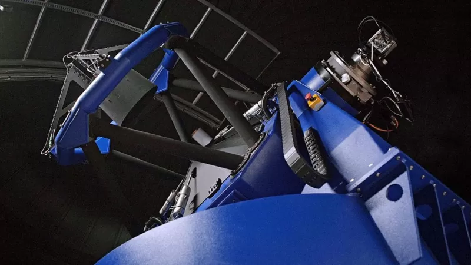

"ለኢትዮጵያ ሳተላይት ማምጠቅ ቅንጦት አይደለም"
21 ሚያዝያ 2022

የመሬት ምልከታ ሳተላይት (Earth Observation Satellite) የሰው ልጅ በህዋ ሳይንስ ካስመዘገባው ውጤቶች አንዱ ነው።
ሳተላይቱ ከምድር ወደ ህዋ ከተመነጠቀ በኋላ መሬትን እየቃኘ መረጃዎችን በፎቶ ይመዘግባል። እንደያስፈላጊነቱም መረጃውን ወደ ምድር ይልካል። አፍሪካ ውስጥ እስካሁን ሳተላይቱን ያመጠቁ በጣት የሚቆጠሩ ሀገሮች ናቸው። ኢትዮጵያም የአምጣቂዎቹን ቡድን ለመቀላቀል መሰናዶ የጀመረችው ከሁለት ዓመት በፊት ነበር። ሳተላይቱን ሀገር ውስጥ ለመስራት እንዲሁም ከኢትዮጵያ ለማምጠቅ የሚያስፈልገው ቴክኖሎጂና የሰው ሀይል ባለመኖሩ ወደ ሩቅ ምሥራቅ ስታማትር፤ ቻይና የገንዘብና የሙያም እገዛ ለመስጠት ተስማማች። ከቻይና 6 ሚሊየን ዶላር ተለግሶ ስራው ተጀመረ። ቻይናውያን ኢንጂነሮች ኢዮጵያውያንን እያሰለጠኑ ሳተላይቱ ቻይና ውስጥ እንዲሁም በከፊል ኢትዮጵያ ውስጥ ተገነባ። 70 ኪሎ ግራም የሚመዝነው ሳተላይት በ2012 ዓ. ም. መባቻ ላይ ከቻይና ይመጥቃል ተብሎ እንደሚጠበቅ የኢትዮጵያ ሳይንስና ቴክኖሎጂ ኢንስቲትዩት ዋና ዳይሬክተር ዶ/ር ሰለሞን በላይ ለቢቢሲ ተናግረዋል። ሳተላይቱ በቻይና እገዛ ከምድረ ቻይና ይምጠቅ እንጂ፤ "ተቆጣጣሪዋም፣ አዛዧም ኢትዮጵያ ናት" የሚለውን አስምረውበታል።
- የሲሲሊ ማፊያዎችን የሚገዳደሩት ናይጄሪያውያን ሴቶች
- ማሌዢያ፡ ዝንጀሮዎች የተማሪውን ስልክ ሰርቀው ፎቶ ተነስተው መለሱለት
- በአንድ ጀንበር ሚሊየነር የሆነው ታንዛኒያዊ ሌላ 2 ሚሊዮን ዶላር አገኘ
ሳተላይት ማምጠቅ ለምን አስፈለገ?
የህዋ ጥናት በዓለም ላይ በፍጥነት እየዘመኑ ካሉ ዘርፎች መካከል ይጠቀሳል። የሰው ልጅ ምድር ጠባው አልያም ከምንኖርበት ዓለም ውጪ ያለውን ለማወቅ ጓጉቶ ዘወትር እየቆፈረ ነው። ከህዋ ፍተሻ በተጨማሪ ህዋን ተጠቅሞ መሬትን ማሰስ የመሬት ምልከታ ሳተላይት ተግባር ነው። ሳተላይቱ መረጃ ሲሰበስብ ይህ ቀረህ አይባለውም። ከግዙፍ ክንውኖች እስከ ጥቃቅን እንቅስቃሴዎች ይመዘግባል። እንደ ባለሙያዎች አባባል ሳተላይቱ ዘርፈ ብዙ ጠቀሜታ አለው። የአየር ንብረት ለውጥን ለመቆጣጠር፣ የተፈጥሮ አደጋዎች ከመድረሳቸው አስቀድሞ ለመተንበይ፣ ደህንነትን ለመጠበቅ ወዘተርፈ ይውላል። በእርግጥ ብዙዎች በታዳጊ ሀገር የህዋ ጥናት አስፈላጊነቱ ላይ ጥያቄ ቢያነሱም፤ ዶ/ር ሰለሞን "ህዋ እንደ ኢትዮጵያ ላሉ ሀገሮች የመኖርና ያለመኖር ጥያቄ ነው፤ ቅንጦት አይደለም" ይላሉ። የአየር ንብረት ለውጥ የመላው ዓለም ስጋት በሆነበት ዘመን፤ አንዳች ተፈጥሯዊ አደጋ ከመድረሱ በፊት አስቀድሞ መረጃ ማግኘት ብልህነት ነው። የዛፍ ቁጥር፣ የአየር ንብረት ለውጥና ሌሎችም መረጃዎች ከተሰበቡ በኋላ እንደ ጎርፍ ያሉ አደጋዎች ከመከሰታቸው በፊት መተንበይ ይቻላል። ግብርና ቀዳሚ መተዳደሪያ በሆነባት ሀገር የቱ አካባቢ ምርታማ ነው? የአየር ንብረት ለውጥ ይኖር ይሆን? የሚሉ ጥያቄዎች በቀላሉ እንዲመለሱ የሳተላይቱ መረጃ አስፈላጊ ይሆናል። ዶ/ር ሰለሞን እንደሚሉት፤ አንድ የግብርና አካባቢን የሚያሳይ ፎቶግራፍ ስለ እርሻ መሬቱ፣ ስለ ውሀው፣ ስለ አፈሩ ዝርዘር መረጃ ይሰጣል። መረጃዎቹን በመጠቀም ምርታማ የሆኑ አካባቢዎችን መለየት፣ የምርት መጠንን በትክክል ማወቅም ይቻላል። ኢንዱስትሪዎች እየተስፋፉ በመጡባት ኢትዮጵያ፤ ፋብሪካዎች የት መገንባት አለባቸው? ለሚለው ጥያቄ የሳተላይቱ መረጃ መልስ ሊሰጥ ይችላል። ሕዝብ መቁጠር ሲያስፈልግ ከዘልማዳዊው መንገድ ሳተላይቱን መጠቀም ይመረጣል። ትክክለኛ መረጃ ከማግኘት፣ ገንዘብና የሰው ሀይል ከማዳን አንጻርም የተሻለው አማራጭ ነው።
ሳተላይቱን ደህንነትን ከመጠበቅ ጋር የሚያስተሳስሩት ባለሙያዎች አሉ። ዶ/ር ሰለሞን በበኩላቸው "በመርህ ደረጃ ህዋ የሚውለው ለሰላማዊ እንቅስቃሴ ነው" ብለው፤ ለጦርነት፣ ለጦር መሳሪያ ማሳለጫነት እንደማይውል ያስረዳሉ። የ 'ኢንተርናሽናል የአውተር ስፔስ' ተቋም አባል መሆን፤ ኢትዮጵያን ከመሰል ድርጊቶች እንደሚያግዳትም አክለዋል።
ኢትዮጵያ እስካሁን መረጃውን እንዴት ታገኝ ነበር?
ኢትዮጵያ እነዚህን መረጃዎች ሳተላይት አምጥቀው ፎቶ ከሚያስነሱ ሀገሮች ትሸምት ነበር። ዶ/ር ሰለሞን የሚያጣቅሱት ከአራት ዓመት በፊት በተሰራ ጥናት መሰረት ኢትዮጵያ በዓመት 250 ሚሊየን ብር ታወጣለች። ጥናቱ ለደህንነት የሚወጣውንና ዩኒቨርስቲዎች የሚከፍሉትን አያካትትም። ወጪው ከዓመት ወደ ዓመት እንደሚጨምርም ያስረዳሉ። የከተሞች መስፋፋት፣ ኢንቨስትመንቶች እየጨመሩ ሲሄዱም በዛው መጠን የመረጃው አስፈላጊነት ይንራል። የሚወጣው ገንዘብም እንዲሁ። ሳተላይት ማምጠቅ እነዚህን ወጪዎች እንደሚቀንስ ይጠበቃል። አፍሪካ ውስጥ መሰል ሳተላይት ለሌላቸው ሀገሮች መረጃ መሸጥም ይቻላል። የኢትዮጵያ ሳይንስና ቴክኖሎጂ ኢንስቲትዩት ዋና ዳይሬክተሩ "ትልቅ ቢዝነስ ነው" የሚሉትም ለዚሁ ነው። "ሲያስፈልግ መረጃ እንሸጣለን። ከኛ የላቀ ቴክኖሎጂ ካላች ሀገሮች ጋር መረጃ መለዋወጥም ይቻላል፤"
ኢትዮጵያ በህዋ ጥናት የት ደረሰች?
ዓለም በህዋ ጥናት ቴክኖሎጂ እየመጠቀ ሄዷል። ኢትዮጵያ ከተቀረው ዓለም አንጻር ጀማሪ ናት። አፍሪካ ውስጥ ናይጄሪያ፣ ደቡብ አፍሪካ፣ አልጄሪያና ግብጽ ጥሩ ስም አላቸው። ኢትዮጵያ "ህዋ ለልማት" የሚል የምሥራቅ አፍሪካ ሀገሮች ትብብር ቢሮ አቋቁማ አበረታች እንቅስቃሴ ማድረጓ ተጠቃሽ ስኬት ነው። የተባበሩት መንግሥታት ድርጅት በ2030 ይደረስባቸዋል ብሎ ካስቀመጣው ግቦች አብዛኞቹ የህዋ ቴክኖሎጂን ያማከሉ መሆናቸው፤ ዘርፉን ችላ ማለት እንደማያዋጣ ያመላክታል። ዶ/ር ሰለሞን የመሬት ምልከታ ሳተላይት ማምጠቅ ኢትዮጵያ በህዋ ሳይንስ ዘርፍ እንቅስቃሴ እያደረገች ስለመሆኑ ለዓለም መልእክት ማስተላለፊያ መንገድ እንደሚሆን ያምናሉ። "ቴክኖሎጂው እጅግ አስፈላጊ ነው፤ ሳተላይቱን ማምጠቅ ኢትዮጵያን በህዋ ዘርፍ ጠንካራ ተወዳዳሪና እኩል ተጽእኖ ፈጣሪ ማድረግ የሚያስችል ነው" ሳተላይቱ አንዴ ከመጠቀ በኋላ ከሶስት እስከ አራት ዓመት ያገለግላል። ከዛ በላይ ሊቆይም ይችላል። በዓለም አቀፍ ሕግ መሰረት፤ የመሬት ምልከታ ሳተላይቶች ህዋ ላይ እንዲቆዩ የሚፈቀደው ለስምንት አመት ነው። ኢትዮጵያ ከምታመጥቀው ሳተላይት፤ በየአራት ቀኑ የመላው ኢትዮጵያ መረጃ የዓለም ደግሞ በ55 ቀን ይገኛል። በህዋ ምርምር ዘርፍ ቅርብ ጊዜ እውን ይሆናሉ ተብለው ከሚጠበቁ ፕሮጀክቶች ውስጥ ላሊበላ ላይ ይገነባል የተባለው ዓለም አቀፍ ኦፕቲክ ቴሌስኮፕ አንዱ ነው።